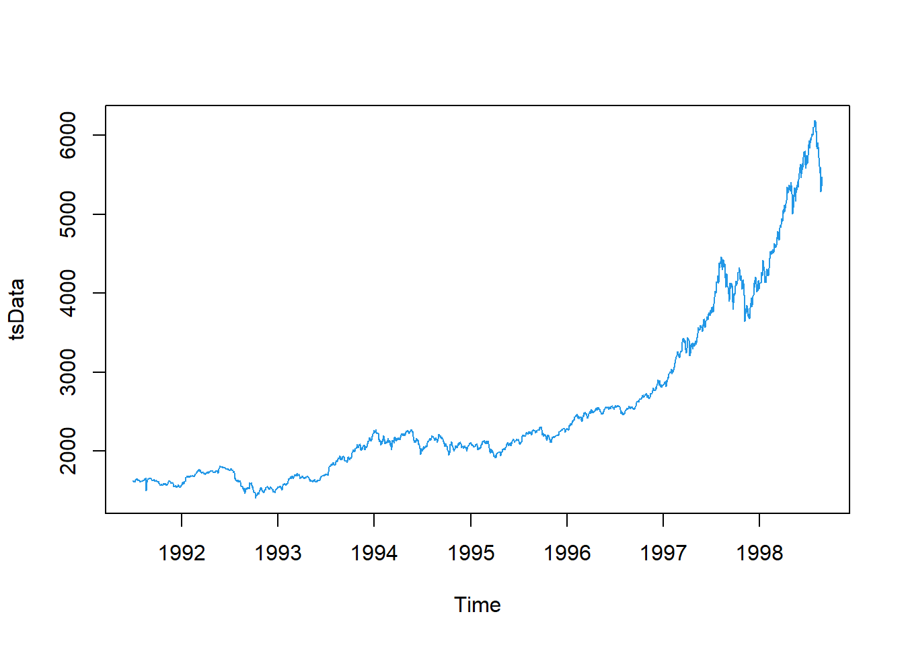

Análisis exploratorio de datos
Historia de la estadística
¿Qué es la estadística?
Ciencia que describe y realiza inferencias sobre el mundo desde una muestra de datos
Ciencia que proporciona metodologías para recolectar organizar, resumir, presentar y analizar datos y hacer inferencias a partir de ellos.
Ramas de la estadística
Estadística descriptiva: Organiza y describe las características de un conjunto de datos con el propósito de facilitar su aplicación, generalmente con el apoyo de gráficas, tablas o medidas numéricas.
Los parámetros estadísticos usados son las medidas de tendencia central y de variabilidad, y los gráficos de barras, de tortas y el histograma.
Estadística inferencial:
Obtiene conclusiones de la población partiendo de una muestra, por medio de diferentes métodos, como las puebas de hipótesis, pronósticos de futuras observaciones, correlaciones y modelos de asociación entre variables.
Algunas definiciones
Población: Conjunto de elementos sobre los que queremos hacer afirmaciones
Muestra: Conjunto de personas o cosas que se consideran representativos del grupo al que pertenecen, con la finalidad de estudiar o determinar las características del grupo.
Parámetro: Valor descriptivo de la población
Estadístico: Valor descriptivo para una muestra
Base de datos: Colección de información organizada, de tal modo que sea fácilmente accesible, gestionada y actualizada
Punto atípico o outlier Son observaciones extremas, alejadas hacia valores muy grandes o pequeños comparadas con el resto de valores. Los valores atípicos pueden ser indicativos de datos que pertenecen a una población diferente del resto de las muestras establecidas. Se pueden detectar con un análisis descriptivo, mediante diagramas de dispersión, boxplot o histograma.

Puntos atípicos
Tipos de variables
Característica o condición que puede tomar diferentes valores en una muestra. Ejm:
- Presión sanguínea
- Masa de los niños
- Frecuencia cardiaca
- Estatura de un grupo de estudiantes
- Edad de los pacientes de un médico
Tipos de variables
Actividad
Clasifique las siguiente variables según sea el caso
| variable | tipo de variable | clasificación | niveles |
|---|---|---|---|
| Color de ojos | Cualitativa | Nominal | verde, azul,cafe |
| Edad | |||
| velocidad | |||
| Estado civil | |||
| Color de la piel | |||
| Color del cabello | |||
| Marcas de carro | |||
| Número de hijos de una familia | |||
| Número de mensajes enviados por whatsap un dia | |||
| Número de estudiantes conectados a clase | |||
| Días de la semana |
Frecuencia estadística
La frecuencia es el número de veces en que un evento se repite durante un experimento, comúnmente, la distribución de la frecuencia suele visualizarse con el uso de histogramas.
Frecuencia absoluta
Es el conteo o número de veces que sucede un evento en un experimento
Frecuencia relativa
Es el porcentaje o proporción de veces que sucede un evento en un experimento, se calcula así:
\[X_i=\frac{xi}{N}=\frac{veces\quad que \quad se \quad observa \quad un \quad evento }{Total \quad de \quad veces}\]
Tablas de frecuencia
Se pueden construir tablas de frecuencia para variables cualitativas y cuantitativas, con la frecuencia absoluta y la frecuencia relativa.
Ejemplo:
Tablas de frecuencia en R
Se preguntó a los estudiantes sobre el hábito de fumar y el género, los resultados encontrados se ilustran a continuación
#Para instalar librerías se hace uso de la siguiente #instrucción, sin el #
#El # sirve para marcar comentarios en códigos de R
#install.packages("knitr")
library(knitr)
fuma <- c('NUNCA','1 ó 2 VECES','NUNCA','NUNCA','CADA MES','NUNCA','NUNCA','NUNCA','A DIARIO', 'NUNCA', 'NUNCA','A DIARIO','1 ó 2 VECES', 'NUNCA', 'NUNCA', 'NUNCA','CADA MES','A DIARIO', 'NUNCA','A DIARIO', 'NUNCA','NUNCA', 'NUNCA','NUNCA', 'CADA SEMANA', 'NUNCA','NUNCA','CADA SEMANA','1 ó 2 VECES','1 ó 2 VECES','1 ó 2 VECES','1 ó 2 VECES', 'CADA SEMANA', 'NUNCA','NUNCA','NUNCA', 'NUNCA','A DIARIO', 'NUNCA', 'NUNCA','NUNCA','NUNCA','NUNCA','NUNCA','NUNCA','CADA MES','1 ó 2 VECES','A DIARIO','NUNCA','CADA SEMANA', 'NUNCA','NUNCA', 'NUNCA','1 ó 2 VECES','A DIARIO', 'CADA MES','A DIARIO','NUNCA','NUNCA','1 ó 2 VECES', '1 ó 2 VECES','1 ó 2 VECES','1 ó 2 VECES','CADA SEMANA', 'NUNCA','NUNCA','1 ó 2 VECES','CADA SEMANA','NUNCA','1 ó 2 VECES','1 ó 2 VECES', 'NUNCA','1 ó 2 VECES','1 ó 2 VECES','1 ó 2 VECES','NUNCA','NUNCA','NUNCA','NUNCA','NUNCA','NUNCA','NUNCA','NUNCA','NUNCA','1 ó 2 VECES','NUNCA', 'NUNCA', 'NUNCA','1 ó 2 VECES','NUNCA','CADA SEMANA','1 ó 2 VECES','1 ó 2 VECES','1 ó 2 VECES','A DIARIO','CADA MES','1 ó 2 VECES','CADA SEMANA', 'NUNCA', 'NUNCA','A DIARIO','1 ó 2 VECES','CADA SEMANA','NUNCA','1 ó 2 VECES','NUNCA','1 ó 2 VECES','NUNCA','NUNCA','NUNCA','NUNCA','CADA MES','CADA SEMANA','NUNCA','1 ó 2 VECES','1 ó 2 VECES','NUNCA','NUNCA','NUNCA','CADA MES','1 ó 2 VECES','NUNCA','NUNCA','NUNCA','1 ó 2 VECES', 'NUNCA','NUNCA','A DIARIO','NUNCA','A DIARIO','A DIARIO','CADA MES','1 ó 2 VECES','NUNCA','CADA MES', 'NUNCA','NUNCA','NUNCA','NUNCA','1 ó 2 VECES','1 ó 2 VECES','NUNCA','NUNCA','NUNCA','CADA MES','1 ó 2 VECES')
# Tabla de resumen
tabla=table(fuma)
tabla## fuma
## 1 ó 2 VECES A DIARIO CADA MES CADA SEMANA NUNCA
## 35 13 10 10 78#Añadir totales
Tab=addmargins(tabla)
Tab## fuma
## 1 ó 2 VECES A DIARIO CADA MES CADA SEMANA NUNCA Sum
## 35 13 10 10 78 146kable(Tab)| fuma | Freq |
|---|---|
| 1 ó 2 VECES | 35 |
| A DIARIO | 13 |
| CADA MES | 10 |
| CADA SEMANA | 10 |
| NUNCA | 78 |
| Sum | 146 |
# Tabla de proporciones o porcentajes
Tab1=prop.table(table(fuma))
Tab1## fuma
## 1 ó 2 VECES A DIARIO CADA MES CADA SEMANA NUNCA
## 0.23972603 0.08904110 0.06849315 0.06849315 0.53424658#Añador totales
Tab2=addmargins(Tab1)
Tab2## fuma
## 1 ó 2 VECES A DIARIO CADA MES CADA SEMANA NUNCA Sum
## 0.23972603 0.08904110 0.06849315 0.06849315 0.53424658 1.00000000kable(addmargins(prop.table(table(fuma))*100))| fuma | Freq |
|---|---|
| 1 ó 2 VECES | 23.972603 |
| A DIARIO | 8.904110 |
| CADA MES | 6.849315 |
| CADA SEMANA | 6.849315 |
| NUNCA | 53.424658 |
| Sum | 100.000000 |
gen=c('Hombre','Hombre','Hombre','Hombre','Hombre','Hombre','Hombre','Hombre','Hombre','Hombre','Hombre','Hombre','Mujer','Mujer','Mujer','Hombre','Hombre','Mujer','Mujer','Hombre','Mujer','Mujer','Hombre','Mujer','Hombre','Mujer','Hombre','Mujer','Mujer','Hombre','Hombre','Mujer','Mujer','Mujer','Mujer','Mujer','Mujer','Hombre','Hombre','Hombre','Hombre','Hombre','Mujer','Hombre','Hombre','Hombre','Mujer','Hombre','Mujer','Hombre','Mujer','Hombre','Mujer','Mujer','Mujer','Mujer','Hombre','Mujer','Hombre','Hombre','Hombre','Mujer','Hombre','Hombre','Hombre','Mujer','Hombre','Mujer','Mujer','Hombre','Hombre','Hombre','Mujer','Mujer','Mujer','Mujer','Hombre','Hombre','Hombre','Mujer','Hombre','Hombre','Hombre','Hombre','Hombre','Mujer','Mujer','Mujer','Mujer','Hombre','Mujer','Hombre','Mujer','Hombre','Hombre','Hombre','Hombre','Mujer','Hombre','Hombre','Hombre','Mujer','Hombre','Hombre','Hombre','Hombre','Hombre','Hombre','Hombre','Hombre','Hombre','Hombre','Hombre','Hombre','Hombre','Hombre','Hombre','Hombre','Hombre','Hombre','Hombre','Hombre','Mujer','Hombre','Hombre','Mujer','Hombre','Hombre','Mujer','Mujer','Hombre','Mujer','Hombre','Mujer','Mujer','Hombre','Mujer','Hombre','Hombre','Hombre','Mujer','Mujer','Hombre','Hombre','Hombre','Hombre')
# Tabla de resumen
table(gen)## gen
## Hombre Mujer
## 93 53#añadir totales
addmargins(table(gen))## gen
## Hombre Mujer Sum
## 93 53 146kable(addmargins(table(gen)))| gen | Freq |
|---|---|
| Hombre | 93 |
| Mujer | 53 |
| Sum | 146 |
# Tabla de proporciones o porcentajes
addmargins(prop.table(table(gen)))## gen
## Hombre Mujer Sum
## 0.6369863 0.3630137 1.0000000kable(prop.table(table(gen))*100)| gen | Freq |
|---|---|
| Hombre | 63.69863 |
| Mujer | 36.30137 |
Pregunta ¿Quién fuma con más frecuencia? Hombres o mujeres
Tablas de contingencia
Además de las tablas de frecuencia también podemos encontrar tablas de doble entrada o tablas de contingencia, donde se pueden relacionar dos variables cualitativas, con sus diferentes niveles. Además de usar la frecuencia absoluta, la frecuencia relativa puede usarse de diferentes maneras
Ejemplo 1
Se analiza el hobbie (Bailar, Ver TV, Deporte) y el género (Femenino y masculino) y se realiza una tabla de doble entrada:
Tabla de contingencia
Esta tabla tiene varias formas posibles de ser analizada
Tabla de frecuencia relativa total
Cada observación se divide por el número total.

Tabla de contingencia relativa
Tabla de frecuencia relativa por filas
Cada observación se divide por el total de la fila, esta forma sirve para comparar, en este caso, cuál es el deporte favorito de cada genero.

Tabla de contingencia relativa por filas
Tabla de frecuencia relativa por columnas
Cada observación se divide por el total de la columna, esta forma sirve para comparar, en este caso, cuál género prefiere cada uno de los deportes.

Tabla de contingencia relativa por columnas
Ejemplo 2 La respuesta a la pregunta anterior la podemos encontrar realizando una tabla de contingencia o tabla de doble entrada
#tabla de frecuencia absoluta
marco=table(fuma,gen)
marco## gen
## fuma Hombre Mujer
## 1 ó 2 VECES 22 13
## A DIARIO 10 3
## CADA MES 7 3
## CADA SEMANA 5 5
## NUNCA 49 29##para añadir los totales de filas y columnas
addmargins(marco)## gen
## fuma Hombre Mujer Sum
## 1 ó 2 VECES 22 13 35
## A DIARIO 10 3 13
## CADA MES 7 3 10
## CADA SEMANA 5 5 10
## NUNCA 49 29 78
## Sum 93 53 146Sin embargo con las frecuencias absolutas es difícil visualizar cual de los dos generos fuma con más frecuencia para ello hacemos uso de la frecuencia relativa
## Frecuencia relativa total
marco=table(fuma,gen)
marco2=prop.table(marco)
marco2## gen
## fuma Hombre Mujer
## 1 ó 2 VECES 0.15068493 0.08904110
## A DIARIO 0.06849315 0.02054795
## CADA MES 0.04794521 0.02054795
## CADA SEMANA 0.03424658 0.03424658
## NUNCA 0.33561644 0.19863014##para añadir los totales de filas y columnas
addmargins(marco2)## gen
## fuma Hombre Mujer Sum
## 1 ó 2 VECES 0.15068493 0.08904110 0.23972603
## A DIARIO 0.06849315 0.02054795 0.08904110
## CADA MES 0.04794521 0.02054795 0.06849315
## CADA SEMANA 0.03424658 0.03424658 0.06849315
## NUNCA 0.33561644 0.19863014 0.53424658
## Sum 0.63698630 0.36301370 1.00000000##Frecuencia relativa por filas
tabla3=prop.table(table(fuma,gen),margin=1)
addmargins(tabla3, margin=2)## gen
## fuma Hombre Mujer Sum
## 1 ó 2 VECES 0.6285714 0.3714286 1.0000000
## A DIARIO 0.7692308 0.2307692 1.0000000
## CADA MES 0.7000000 0.3000000 1.0000000
## CADA SEMANA 0.5000000 0.5000000 1.0000000
## NUNCA 0.6282051 0.3717949 1.0000000##Frecuencia relativa por COLUMNAS
tabla4=prop.table(table(fuma,gen),margin=2)
tabla4## gen
## fuma Hombre Mujer
## 1 ó 2 VECES 0.23655914 0.24528302
## A DIARIO 0.10752688 0.05660377
## CADA MES 0.07526882 0.05660377
## CADA SEMANA 0.05376344 0.09433962
## NUNCA 0.52688172 0.54716981addmargins(tabla4, margin=1)## gen
## fuma Hombre Mujer
## 1 ó 2 VECES 0.23655914 0.24528302
## A DIARIO 0.10752688 0.05660377
## CADA MES 0.07526882 0.05660377
## CADA SEMANA 0.05376344 0.09433962
## NUNCA 0.52688172 0.54716981
## Sum 1.00000000 1.00000000Video (ver hasta el minuto 9:20, lo siguiente es de probabilidades)
Gráficos
Existen diferentes tipos de gráficos, los cuales ilustran la información contenida en tablas, dentro de los gráficos más usados se encuentran:
Gráfico de barras
Forma de resumir un conjunto de datos por categorías. Muestra los datos usando varias barras de la misma anchura, cada una representa una categoría concreta. La altura de cada barra es proporcional a la suma de los valores de la categoría que representa.
Ejemplo 1Ejemplo 2
En el siguiente ejemplo se hace uso de variables de tipo cualitativo, con la que se construye una tabla de frecuencias, gráfico de barras y de tortas.
Histograma
Es una representación gráfica de una variable en forma de barras, donde la superficie de cada barra es proporcional a la frecuencia de los valores representados, sirven para obtener una “primera vista” general de la distribución de la muestra, respecto a una característica
Gráfico de tortas
Representación gráfica de una serie de cantidades, consiste en un círculo dividido en varios sectores, cuyo tamaño corresponde con las proporciones de las cantidades. Básicamente, este tipo de gráfico muestra la relación porcentual entre las partes con relación a su conjunto. El área proporcional en grados de la circunferencia se cacula así:
\[Grados=360° * frecuencia\quad relativa=360°* \frac{veces \quad que \quad se \quad repite \quad un \quad evento}{total\quad de \quad veces}\]
Ejemplo
La siguiente información fue reportada en la revista Motor Trend de EE.UU, en el año 1974. contiene el consumo de combustible y 10 aspectos del diseño y rendimiento para 32 automóviles (modelos 1973–74).
A continuación se ilustra un resumen del número de cilindros que cada uno de los automoviles mostró
library(knitr)
library(ggplot2)
#Base de datos
head(mtcars)## mpg cyl disp hp drat wt qsec vs am gear carb
## Mazda RX4 21.0 6 160 110 3.90 2.620 16.46 0 1 4 4
## Mazda RX4 Wag 21.0 6 160 110 3.90 2.875 17.02 0 1 4 4
## Datsun 710 22.8 4 108 93 3.85 2.320 18.61 1 1 4 1
## Hornet 4 Drive 21.4 6 258 110 3.08 3.215 19.44 1 0 3 1
## Hornet Sportabout 18.7 8 360 175 3.15 3.440 17.02 0 0 3 2
## Valiant 18.1 6 225 105 2.76 3.460 20.22 1 0 3 1#Creación de tabla de frcuencia absoluta
j=(table(mtcars$cyl))
#creación de porcentajes
x=data.frame(prop.table(j))
porcentajes=x[,2]
#grados proporcionales
grad=porcentajes*360
m=data.frame(table(mtcars$cyl),porcentajes*100,grad)
colnames(m)=c("cilindros","frecuencia absoluta","Porcentaje","grad°")
kable(m,caption = "Frecuencia del número de cilindros")| cilindros | frecuencia absoluta | Porcentaje | grad° |
|---|---|---|---|
| 4 | 11 | 34.375 | 123.75 |
| 6 | 7 | 21.875 | 78.75 |
| 8 | 14 | 43.750 | 157.50 |
barplot(j,col='#4168c3',ylab="Frecuencia absoluta", xlab="Número de cilindros")
box()
#Gráfico de tortas
bar <- ggplot(data=m, aes(x=1,y= porcentajes,
fill=m$cilindros))+
geom_bar(stat='identity', colour='white') +
coord_polar(theta='y')+
scale_fill_manual(values=c("salmon","steelblue","gray"))+theme_void()+ labs(title="Gráfico de torta")+
geom_text(aes(label=porcentajes*100),
position=position_stack(vjust=0.5),color="white",size=5)
bar
#Gráfico de donas
bar1 <- ggplot(data=m, aes(x=2,y= porcentajes,
fill=m$cilindros))+
geom_bar(stat='identity', colour='white') +
coord_polar(theta='y')+
scale_fill_manual(values=c("salmon","steelblue","gray"))+theme_void()+ labs(title="Gráfico de donas")+xlim(0.5,2.5)+
geom_text(aes(label=porcentajes*100),
position=position_stack(vjust=0.5),color="white",size=5)
bar1
Gráfico de series de tiempo
Una serie de tiempo es una colección de observaciones de una variable tomadas de forma secuencial y ordenada en el tiempo (instantes de tiempo equiespacios). Las series pueden tener periodicidad anual, semestral, trimestral, mensual,diaria etc., según los periodos de tiempo en los que están recogidos los datos que la componen.
Aparecen en numerosos campos
Economía y Marketing
- Precio del alquiler de apartamentos durante varios meses.
— Precio promedio del trigo mensual.
— Índices del precio del petróleo por semana.
Demografía
— Número de habitantes en cierto país por año.
— Tasa de mortalidad infantil por año.
- Infectados por día de COVID19
Medioambiente
— Lluvia recogida diariamente en una localidad.
— Temperatura media diaria.
— Medición diaria del contenido en residuos tóxicos en Las series de tiempo tienen una tendencia y una variación estacional además de un error que oscila alrededor de 0.
Tendencia
Cambio a largo plazo que se produce en relación al nivel medio, se identifica con un movimiento suave de la serie a largo plazo
Efecto estacional Variación de un patrón de comportamiento ciclico que se repiten cada cierto periodo de tiempo.
Ejemplo en R
La siguiente base de datos representa los precios de cierre diarios del índice bursátil Alemania DAX (Ibis), desde el año 1991 hasta 1998, los datos se muestrean en horario comercial, es decir, se omiten los fines de semana y feriados. para un total de 1860 observaciones. Los datos fueron proporcionados por Erste Bank AG, Viena, Austria.
La serie de tiempo con su respectiva descomposición se enlistan a continuación.
tsData <- EuStockMarkets[,1] # ts data
plot(tsData,col=4)
decomposedRes <- decompose(tsData, type="mult") # use type = "additive" for additive components
plot (decomposedRes,col=4) # see plot below
Gráfico de líneas
Muestran tendencias a lo largo de un período de tiempo, para diferentes niveles de una variable cualitativa, por lo tanto se usan para hacer comparaciones. Por ejemplo el número total de asesorías brindadas en siga para los estudiantes, en las diferentes asignaturas
Ejemplo
Los siguientes datos describen el efecto de la vitamina c en el crecimiento de los dientes de un cerdo de guinea (Cuy), suministrado bajo dos formas diferentes, jugo de naranja y ácido ascorbico.
library(plotly)
datn <- read.table(header=TRUE, text='
supp dose length
OJ 0.5 13.23
OJ 1.0 22.70
OJ 2.0 26.06
VC 0.5 7.98
VC 1.0 16.77
VC 2.0 26.14
')
datn2 <- datn
datn2$dose <- factor(datn2$dose)
p <- ggplot(data=datn2, aes(x=dose, y=length, group=supp, colour=supp)) +
geom_line() +
geom_point()
fig <- ggplotly(p)
figMedidas de tendencia central
Medidas de tendencia central
Medidas de variabilidad
Medidas de variabilidad
Cómo estimar la media, la desviación estandar en la calculadora
Medidas de tendencia central en tablas de frecuencia
Tabla de datos agrupados
Tablas de frecuencia para variables cuantitativas Se tiene la edad de 96 estudiantes nuevos del itm
|–|–|–|–|–|–|–|–|–|–|–|–| |18|26|19|19|21|33|18|18|18|37|18|33| |21|34|19|18|18|21|27|20|21|18|29|17| |28|26|25|28|29|23|27|18|17|42|20|18| |24|18|24|19|26|25|24|19|22|21|26|18| |19|21|25|21|26|17|17|21|20|27|16|18| |21|23|41|23|43|26|49|19|21|18|34|23| |17|17|23|18|26|24|23|21|30|18|18|20| |21|31|20|33|21|20|18|17|27|23|27|28|
Ejemplo en R El siguiente conjunto de datos da las medidas en centimetros de las variables largo y ancho, tanto del sepalo como del petalo, para 50 flores de 3 especies de flores, iris setosa, versicolor y virginica.
#install.packages("janitor")
library(dplyr)
head(iris)## Sepal.Length Sepal.Width Petal.Length Petal.Width Species
## 1 5.1 3.5 1.4 0.2 setosa
## 2 4.9 3.0 1.4 0.2 setosa
## 3 4.7 3.2 1.3 0.2 setosa
## 4 4.6 3.1 1.5 0.2 setosa
## 5 5.0 3.6 1.4 0.2 setosa
## 6 5.4 3.9 1.7 0.4 setosa¡El resultado es que tenemos 5 categorías en una tabla más legible!
Especificando los cortes o límites de los intervalos Aunque el resultado anterior no tiene nada incorrecto, podríamos hacer que los intervalos sean más legibles. El truco es que el argumento breaks no sólo acepta el número de intervalos que queremos, sino que también podemos indicar los puntos en los que queremos hacer los cortes. Por ejemplo, vamos a hacer intervalos de longitud 1, desde el 4 hasta el 8. Esto lo podemos hacer con la función seq.
seq(from = 4, to = 8, by = 1) ## [1] 4 5 6 7 8 breaks <- seq(from = 4, to = 8, by = 1)
iris %>% mutate( sepal_length_group = cut(sepal_length, breaks = breaks) ) %>% group_by(sepal_length_group) %>% summarise(frequency = n())
¡Mira qué linda tabla! A primera vista lo que se aprecia es que hay más valores bajos (entre 4 y 6) que altos (entre 6 y 8), y también que están más concentrados en el medio, (entre 5 y 6).
Los intervalos son abiertos a la izquierda y cerrados a la derecha. Esto implica que el 5 está incluído en el primer intervalo y no en el segundo
Frecuencias acumuladas Podemos agregar una columna más a la tabla de frecuencias, acumulando las frecuencias para cada clase, utilizando la función cumsum.
breaks <- seq(from = 4, to = 8, by = 1)
iris %>% mutate( sepal_length_group = cut(sepal_length, breaks = breaks) ) %>% group_by(sepal_length_group) %>% summarise(frequency = n()) %>% mutate(cum_frequency = cumsum(frequency))
Pregunta
Si tenemos la siguiente tabla de frecuencias Categoria Frecuencia Frecuencia acumulada (0 - 10] - 20 (10 - 20] - 50 (X - 30] - 80 (30 - 40] - 100 ¿Cuál es el tamaño de la muestra? ¿Cuál es la frecuencia del intervalo (10 - 20]? ¿Cuánto vale X? Mostrar respuesta Graficar una tabla de frecuencias de una variable cuantitativa Podríamos seguir los mismo pasos que para una variable cualitativa y utilizar geom_bar
breaks <- seq(from = 4, to = 8, by = 1)
iris %>% mutate(sepal_length_group = cut(sepal_length, breaks = breaks)) %>% group_by(sepal_length_group) %>% summarise(frequency = n()) %>% ggplot() + geom_bar(aes(x = sepal_length_group, y = frequency), stat = ‘identity’)
Sin embargo, un histograma es más apropiado. Un histograma es un tipo particular de gráfico de barras. Las principales diferencias son:
Las etiquetas en el eje de las x se colocan los límites de los intervalos Si hay algún intervalo cuya frecuencia sea 0, este intervalo sigue mostrándose en el eje x, mientras que en un gráfico de barras no necesariamente Como el límite superior de un intervalo es el límite inferior del siguiente, no hay espacio entre las barras Las barras podrían tener anchos distintos, aunque esto no es muy común En el eje de las y siempre van las frecuencias. Si no, no es un histograma Como los histogramas son gráficos muy comunes, existe la función geom_histogram para ahorrarnos algunas líneas de código.
breaks <- seq(from = 4, to = 8, by = 1)
iris %>% ggplot() + geom_histogram(aes(x = sepal_length), binwidth = 1, boundary = 4, colour = ‘lightgrey’)
Para tener el mismo gráfico que antes, especifiqué que el ancho de los intervalos sea bidwidth = 1 y que uno de los límites sea boundary = 4. También agregué colour = ‘lightgrey’ para que los bordes fuesen gris claro; no es necesario, pero me gusta más cómo se ve así que sin separación entre las barras.
Ya que estamos viendo todo en un gráfico y no hay que leer, nos podemos dar el lujo de tener intervalos más cortos y por lo tanto más intervalos y más detalle.
breaks <- seq(from = 4, to = 8, by = 0.5)
iris %>% ggplot() + geom_histogram(aes(x = sepal_length), breaks = breaks, colour = ‘lightgrey’) + ggtitle(‘Frequency distribution of Sepal Length’, subtitle = ‘Histogram’) + labs(x = ‘Sepal length’, y = ‘Frequency’)
Conclusión Las tablas de frecuencia son una herramienta bastante útil para saber de qué va una variable, y además se contruyen súper fácil en R. También vimos lo fácil que es visualizar las tablas con un gráfico de barras en el caso de una variable cualitativa y con un histograma en el caso de una variable cuantitativa.